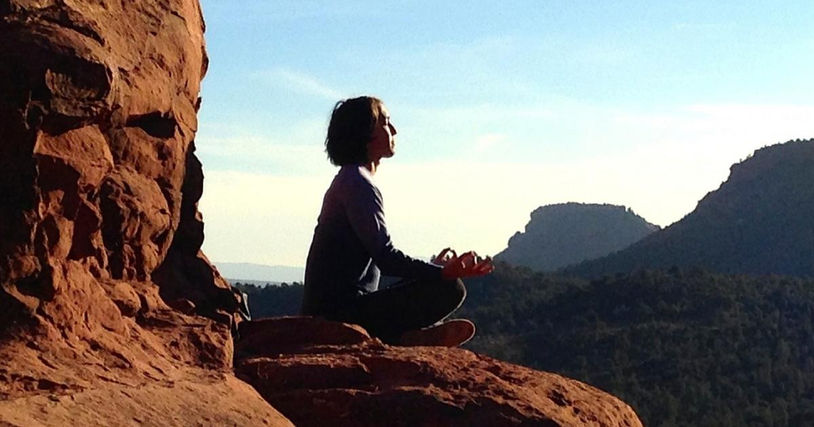

How to Use Meditation to Reduce Anxiety
By: Lila
Introduction
Meditation: A Powerful Tool for Overcoming Anxiety.
Anxiety affects millions of people worldwide, causing intense feelings of fear, worry, and unease that can be debilitating. Fortunately, meditation has emerged as a powerful tool for reducing anxiety and promoting peace of mind.
Research studies reveal that meditation alters brain activity, reducing the negative effects of anxiety and promoting relaxation. Furthermore, meditation has been shown to lower heart rate and blood pressure, reduce muscle tension, and positively impact the immune system.
Incorporating a daily meditation practice into your routine can significantly improve your ability to cope with anxiety. By focusing on the present moment, quieting the mind, and fostering a sense of calm, meditation can help to reduce feelings of stress and worry.
Whether you’re a beginner or a seasoned meditator, our website provides valuable resources to help you reduce anxiety through meditation. From guided meditations to tips on how to establish a regular meditation practice, we offer practical advice and techniques to help you find greater peace of mind.
Join the millions of people who have discovered the power of meditation to reduce anxiety and improve well-being. Visit our website today and start your journey towards greater tranquility and inner peace.
ad space
Understanding Anxiety
Anxiety is a common emotion that most people experience from time to time. It can be the result of job stress, financial concerns, family problems, or even just everyday worries that come with modern-day living. For some people, anxiety can be debilitating and can affect their daily lives. Understanding anxiety and how it affects you is the first step in reducing its impact.
Anxiety is an emotion that is often accompanied by physical symptoms such as rapid heartbeat, rapid breathing, sweating, and trembling. It is a natural reaction to stress and can be beneficial in some situations. However, when it becomes excessive or chronic, it can interfere with daily life.
The causes of anxiety are complex and can vary from person to person. Some people have a genetic predisposition to anxiety, while others may develop it as a result of traumatic experiences. For most people, anxiety is a combination of both internal and external factors.
Research has shown that people who practice meditation regularly are more likely to have lower levels of anxiety. Meditation can help reduce anxiety by promoting relaxation, reducing muscle tension, and slowing down the breathing rate. It allows people to focus on the present moment rather than worrying about the future or dwelling on the past.
In addition to reducing anxiety, meditation can have other positive health benefits. Studies have shown that regular meditation can help lower blood pressure, reduce symptoms of depression, and improve sleep quality.
If you suffer from anxiety, it is important to seek professional help. A mental health professional can help you develop strategies to manage your anxiety and improve your overall well-being. Meditation can be a great complementary practice to help manage anxiety, but it should never replace professional medical advice.
In conclusion, understanding anxiety is the first step in reducing its impact. Whether you are experiencing mild anxiety or chronic anxiety, meditation can be a helpful tool to manage its symptoms. By practicing meditation regularly, you can improve your overall health and reduce the impact of anxiety on your daily life.
ad space
Meditation Techniques
Meditation Techniques: Quiet Your Mind and Find Peace
If you're suffering from anxiety, you're not alone. Millions of people struggle with feelings of worry, stress, and fear on a daily basis. The good news is that meditation can be an effective tool to help manage these feelings and find a sense of peace and calm. By practicing meditation regularly, you can quiet your mind, calm your nervous system, and cultivate a sense of mindfulness that can help you better navigate life's challenges.
There are many different types of meditation, each with its own unique benefits and techniques. Some popular techniques include:
- Mindfulness meditation: This practice involves paying attention to the present moment, without judgment. By focusing on your breath, body sensations, or surroundings, you can learn to let go of distracting thoughts and emotions.
- Loving-kindness meditation: This technique involves cultivating feelings of compassion and kindness toward yourself and others. By visualizing positive experiences and sending well-wishes to those around you, you can reduce feelings of anxiety and increase feelings of happiness and connection.
- Body scan meditation: This practice involves focusing on and relaxing various parts of your body, from your toes to the top of your head. By becoming more aware of physical sensations, you can learn to let go of tension and find a sense of relaxation.
No matter which technique you choose, the key is to practice regularly and consistently. Whether you meditate for just a few minutes each day or longer periods, the benefits of meditation can be profound. Studies have shown that regular meditation can reduce symptoms of anxiety, improve sleep, boost immunity, and even change the structure of your brain in positive ways.
So if you're ready to find peace and reduce anxiety in your life, give meditation a try. With patience, practice, and a willingness to experiment with different techniques, you can learn to quiet your mind, calm your body, and cultivate a sense of mindfulness that can serve you well for years to come.
ad space
Benefits of Meditation
Meditation is a powerful tool that can help you overcome anxiety and stress. But did you know that there are additional benefits of meditation that extend beyond just relaxation? In this article, we'll explore the many advantages of meditation and how it can have a positive impact on your physical and emotional well-being.
Research has shown that meditation can lower blood pressure, reduce negative emotions, and even improve immune function. It can also help people who suffer from chronic pain, insomnia, and depression. Practicing meditation on a regular basis can help you develop a sense of inner calm and increase your ability to manage stressful situations.
One benefit of meditation is that it can improve your ability to focus and concentrate. Meditation helps you develop a stronger awareness of your thoughts and feelings, allowing you to become more mindful and present in daily life. This increased focus can help you be more productive at work and more engaged in your relationships.
Another benefit of meditation is that it can increase your sense of compassion and empathy for others. Practicing meditation can help you become more aware of the suffering of others, and more motivated to help. This increased sense of empathy can lead to better relationships with others and a stronger sense of community.
Perhaps most importantly, meditation can help you cultivate a sense of inner peace and contentment. By learning to focus on the present moment and let go of negative thoughts and worries, you can experience a sense of calm and happiness that extends far beyond your meditation practice.
In conclusion, while meditation is an effective way to reduce anxiety, its benefits extend far beyond just stress relief. By cultivating a regular meditation practice, you can improve your physical and emotional health, increase your ability to focus and connect with others, and experience a sense of inner peace and fulfillment.
ad space
Incorporating Meditation into Your Routine
Anxiety is a common experience for most people, but not everyone knows how to reduce it. Meditation presents an effective solution that is simple, yet powerful. Whether you have tried it before or not, incorporating meditation into your routine can transform your life and improve your mental health. Here's how.
First, set a specific time for practicing meditation. It could be in the morning, during your lunch break, or in the evening. Choose a time that works best for you and stick to it. It will help you develop a habit and ensure consistency. You can start with a few minutes a day and gradually increase to longer periods.
Second, create a conducive environment for meditation. Choose a quiet and comfortable space where you won't be disturbed. You can use a meditation cushion or a chair to sit on. Avoid meditating in bed or in front of electronic devices.
Third, choose a meditation technique that suits you. There are various techniques to choose from, including mindfulness, guided meditation, transcendental meditation, and more. Research and try out different techniques to find what works for you.
Fourth, be patient and compassionate towards yourself. Meditation is not a magic pill that will make all your problems go away. It takes time and consistent practice. Be kind to yourself and celebrate small steps towards improvement.
In conclusion, incorporating meditation into your routine promotes relaxation, clarity of mind, and self-awareness. It's a simple, yet powerful tool that can help reduce anxiety and benefit overall well-being. Take the time to develop a consistent practice and enjoy the many benefits of meditation.
ad space
Seeking Professional Help
Meditation is a powerful tool for reducing anxiety, but sometimes you need a little extra support to help you cope. Seeking professional help can be an excellent way to complement your meditation practice and find lasting relief from anxiety.
Anxiety can be a challenging condition to deal with, and it's not uncommon to feel overwhelmed or even hopeless at times. That's why seeking professional help can be so beneficial. A mental health professional can provide you with the resources and guidance you need to manage your anxiety effectively.
There are several types of professionals who can help with anxiety, including therapists, psychologists, and psychiatrists. A therapist can help you learn coping skills, develop relaxation techniques, and apply mindfulness practices that complement your meditation practice. They can also provide support through talk therapy, helping you work through any underlying issues that may be contributing to your anxiety.
Psychologists can help you understand the root causes of your anxiety and provide you with tools to manage it effectively. They may also offer cognitive-behavioral therapy (CBT), which is a type of therapy that helps you change negative thought patterns and behaviors that contribute to anxiety.
If your anxiety is severe or interfering with your daily life, a psychiatrist may be the right choice for you. Psychiatrists can provide medication management, which can help alleviate your symptoms and enable you to function more effectively in your daily life.
Meditation is a powerful tool for reducing anxiety, but it's essential to seek professional help if you need it. A mental health professional can help you identify the underlying causes of your anxiety and provide you with the support you need to manage it effectively. So, if you're struggling with anxiety, don't hesitate to seek the help you need to feel better.
ad space
Conclusion
After spending time exploring the benefits and methods of meditation, it is clear that this practice offers a powerful tool for those looking to reduce anxiety in their lives. Meditation has been shown to lower stress levels, increase feelings of well-being, and promote overall physical health.
Not only can meditation help to alleviate the symptoms of anxiety, but this practice can also offer a sense of clarity and calmness that can help individuals to better manage their emotions in daily life. By incorporating meditation into a regular routine, individuals can become more aware of their thoughts and feelings, and learn to respond to them in a more measured and effective way.
Of course, meditation is not a panacea, and there may be times when additional support or treatment is needed. However, for those looking to add a positive and proactive element to their approach to anxiety, meditation is a valuable technique to consider.
As with any new habit, getting started with meditation can feel overwhelming. However, beginning with short, daily practices and gradually increasing the amount of time spent meditating can help to make this practice feel more approachable and sustainable. There are a variety of meditation apps, online resources, and classes available to help individuals learn more about meditation and establish a regular routine.
In the end, exploring the practice of meditation and its potential to reduce anxiety can be a transformative journey that not only helps to alleviate negative symptoms, but can also offer a sense of profound peace and growth. So why not give it a try?
ad space